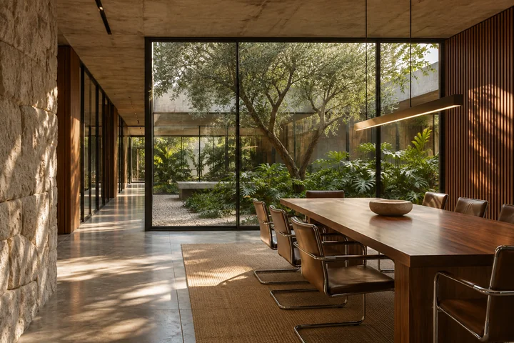

Solicite uma primeira conversa.
Escolha o assunto e quando prefere receber retorno. Deixe os detalhes e documentos para um canal combinado com o escritório.
Pedido de contato
Escolha o assunto e um período para retorno.
Solicitação simulada
- Protocolo de teste
- Assunto
- Retorno
Em um contato real, o escritório avaliaria a possibilidade de atendimento e combinaria a próxima conversa.
Como funciona o retorno
- Você indica o tema
Escolha a área que melhor descreve a demanda.
- O escritório verifica o atendimento
A equipe entende o assunto e combina um horário para conversar.
- Vocês definem o próximo passo
O escritório orienta como encaminhar informações adicionais.
Qual é o assunto?
Família e sucessões
Para conversas sobre relações familiares, planejamento sucessório ou organização de documentos após um falecimento.
Selecionar assuntoContratos
Para preparar, revisar ou conversar sobre dúvidas em um contrato existente.
Selecionar assuntoRelações de consumo
Para organizar uma demanda relacionada a compra, contratação de serviço ou atendimento ao consumidor.
Selecionar assunto

Perguntas sobre o primeiro contato
O período é um horário reservado?
O período indica quando você prefere receber o retorno. Ele não reserva uma conversa.
Posso mudar o assunto depois?
Na demonstração, o botão Editar pedido reabre as opções antes de copiar a mensagem.
O formulário recebe documentos?
O formulário não tem anexos. No atendimento real, confirme com o escritório o meio adequado.